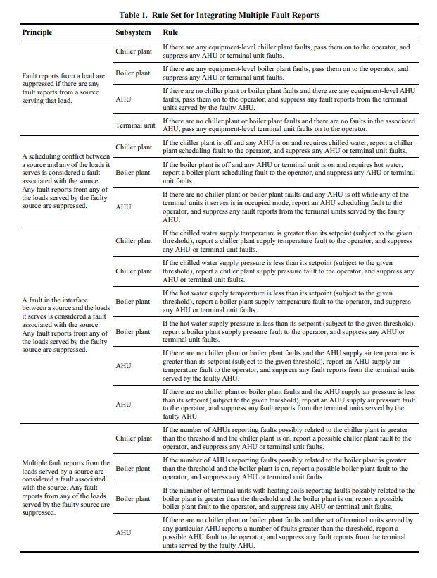

A dynamic simulation model of a three-story office building and its HVAC system was developed using the HVACSIM+ simulation tool (Park et al. 1985) and the Weather Year for Energy Calculations Version 2 data for Sterling, Virginia, from ASHRAE (1997). The simulation consists of nine zones, three air-handling units, a chiller, a cooling tower, and a boiler. The terminal units are pressure-independent variable-air-volume (VAV) boxes with hydronic reheat. Each of the three single-duct VAV AHUs serves the terminal units for three zones. The building shell and air-handling systems are represented by aggregating HVACSIM+ component models, which were developed by Haves and Norford (1997). The chiller and cooling tower models developed
by Kohonen et al. (1993) as well as the boiler model developed by Wang (1992) were also adapted from previous work. The relatively severe faults selected for this study were chosen to maximize their impact on multiple pieces of equipment in order to have a more meaningful test of the hierarchical FDD tool. The faults, listed in Table 2, were simulated through modifications to the boundary conditions or component models.
Fault #
Fault Description
Implementation
| 0 | Fault free | Run the simulation without modification |
| 1 | AHU scheduling fault | Schedule zone 1 ON during the unoccupied periods. |
| 2 | VAV box reheat coil valve stuck nearly closed | Fix the zone 1 reheat coil valve position to 5% open |
| 3 | VAV box reheat coil valve stuck nearly open | Fix the zone 1 reheat coil valve position to 95% open. |
| 4 | VAV box discharge air temperature (DAT) sensor fault | Fix the zone 1 DAT sensor output to −10°C (14°F). |
| 5 | Chiller plant scheduling fault | Schedule AHU-1 and its associated VAV boxes (zones 1, 4, and 7) ON during the unoccupied periods. |
| 6 | AHU supply air pressure setpoint fault | Set the AHU-1 supply air pressure setpoint to 0.01 kPa (0.04 in. w.g.) |
| 7 | AHU supply air pressure sensor fault | Fix the AHU-1 supply air pressure sensor output to −5.00 kPa (–20.0 in. w.g.). |
| 8 | AHU supply fan failure | Fix the AHU-1 supply fan speed to zero |
| 9 | AHU supply air temperature setpoint too low | Change the AHU-1 supply air temperature setpoint to 5°C (41°F). |
| 10 | AHU supply air temperature sensor drift | Increase the AHU-1 supply air temperature sensor offset calibration parameter by +5°C (+9°F). |
| 11 | AHU return air temperature sensor failure | Fix the AHU-1 return air temperature sensor output to −10°C (14°F). |
| 12 | AHU mixed air temperature sensor failure | Fix the AHU-1 mixed air temperature sensor output to −10°C (14°F). |
| 13 | AHU outdoor air temperature sensor failure | Fix the AHU-1 outdoor air temperature sensor output to −20°C (–4°F). |
| 14 | AHU heating coil valve stuck nearly open | Fix the AHU-1 heating coil valve position to 95% open. |
| 15 | AHU cooling coil valve stuck nearly open | Fix the AHU-1 cooling coil valve position to 95% open |
| 16 | Chilled water supply temperature setpoint fault | Change the chilled water supply temperature setpoint to 20°C (68°F). |
| 17 | Chilled water supply temperature fault | Fix the chilled water supply temperature to 20°C (68°F). |
| 18 | Hot water supply temperature setpoint fault | Change the hot water supply temperature setpoint to 20°C (68°F |
| 19 | Hot water supply temperature fault | Fix the hot water supply temperature to 20°C (68°F). |
The simulation study consisted of a one-week simulation run for 20 different fault conditions during each of three seasons: heating season (using February weather data), swing season (using October weather data), and cooling season (using July weather data). The simulation output data files were then used as input data for the software implementation of the hierarchical FDD tool. The software implementation also included equipment-specific AHU and VAV box FDD tools known as AHU Performance Assessment Rules (APAR) and VAV Box Performance Assessment Control Charts (VPACC). APAR, developed by House et al. (2001), classifies the mode of operation based on the positions of the heating coil valve, cooling coil valve, and mixing box damper. APAR then evaluates a set of rules specific to that mode. VPACC (Schein and House 2003) applies cumulative sum charts from statistical process control to a small number of VAV box process errors.
The results from simulation testing are summarized in Table 3; for more details see Schein and Bushby (2005). The result of an equipment-specific FDD tool consists of a fault status, either faulty or fault-free, and, if faulty, one or more possible causes. Since the hierarchical FDD tool that is the subject of this study processes fault reports and performs FDD analysis on raw data from multiple pieces of equipment, the results take a somewhat different form from those for an equipment-specific FDD tool. The output from the hierarchical FDD tool consists of fault reports for one or more pieces of equipment. No possible causes are listed if the fault report was generated by the hierarchical FDD tool’s analysis of raw data; however, if the fault report was generated by an equipment-specific FDD tool, a list of causes will be passed on, if one is provided by the equipment-specific tool. The fault reports are further classified as primary and secondary diagnoses. The primary diagnosis is defined as the piece of equipment for which the most fault reports are generated for that run. Any other pieces of equipment for which fault reports are generated are secondary diagnoses.
An “X” indicates that the actual source of the fault was correctly identified by the hierarchical FDD algorithm. A “−“indicates that the source of the fault was not correctly identified by the hierarchical FDD algorithm.
Of a total of 60 simulation runs, 49 indicated the actual source of the fault as the primary diagnosis. In addition to three fault-free cases, there were five simulation runs in which the fault had no impact on system operation—in all eight of these cases, the hierarchical FDD tool correctly reported no alarms. In one case, the primary diagnosis was incorrect, but the actual source of the fault was a secondary diagnosis. There were two cases in which the actual source of the fault was neither a primary nor a secondary diagnosis. Combining the 49 correct primary diagnoses with the eight correct nonfault cases, the hierarchical FDD tool provided a correct primary response 95% of the time.
The heating season simulation of fault 9 illustrates the principle that fault reports from a load are suppressed if there are any fault reports from a source serving that load. In the fault-free simulation, the supply air temperature setpoint is reset based on the maximum of the zone temperatures of the spaces served by the AHU. In cooling or economizing modes, if the maximum of the zone temperatures is less than or equal to 15°C (59°F), the supply air temperature setpoint is set at 24°C (75°F). As the maximum zone temperature increases, the setpoint decreases linearly until it reaches 10°C (50°F) at a maximum zone temperature of 27°C (81°F). If the maximum zone temperature is greater than or equal to 27°C (75°F), the supply air temperature setpoint is set at 10°C (50°F). The reset schedule is the same in heating mode, except that the minimum of the zone temperatures of the spaces served by the AHU is used instead of the maximum. The fault was implemented by replacing the supply air temperature reset schedule for AHU-1 with a fixed value of 5°C (41°F), which is less than the 10°C (50°F) minimum value in the reset schedule.
Figure 3 shows the results from the occupied period of one day of the simulation. On this day, the supply air temperature could only be maintained at the new setpoint by keeping the cooling coil valve fully open for the entire day. This condition was detected as a fault by the equipment-specific AHU FDD, which generated an alarm and sent it to the hierarchical FDD tool. Figure 4 shows the effect of fault 9 on zone 4 (one of the zones served by AHU-1) for the same time period as in Figure 3. Since there was a heating load on the zone, the VAV box damper closed as far as possible given its minimum airflow requirement, while the reheat coil valve opened fully. The air supplied to the VAV box by AHU-1 was so cold that even with the minimum airflow and maximum reheat, the zone temperature remained below the heating setpoint. Due to the low zone temperature, the equipment-specific VAV box FDD generated an alarm and sent it to the hierarchical FDD tool
The hierarchical FDD tool received the fault reports from both AHU-1 and zone 4. Rule 3 states that if there are any equipment-level AHU faults, they are passed on to the operator, and any fault reports from the terminal units served by the faulty AHU are suppressed. In accordance with rule 3, the ahu-1 fault report was correctly passed on to the operator, while the zone 4 fault report was correctly suppressed.
Fault 17, the chilled water supply temperature fault, provides an example of the principle that a fault in the air or water interface between a source and the loads it serves is considered a fault associated with the source. The fault was implemented by fixing the chilled water supply temperature in the simulation model to a constant value of 20°C (68°) (the setpoint is 6°C [43°F]). There was no equipment-specific chilled water plant FDD tool in this study, so no fault report was sent to the hierarchical FDD tool.
Chilled water is supplied from the central plant to AHU-1, AHU-2, and AHU-3. Figure 5 shows the effect of this fault on AHU-3 from the occupied period of one day of the simulation; the results for AHU-1 and AHU-2 are similar. The AHU control logic modulates the cooling coil control valve to maintain the supply air temperature at its setpoint. Because the chilled water supplied to the AHU cooling coil was too warm, the cooling coil valve saturated at 100% open, while the supply air temperature remained well above its setpoint. The equipment-specific AHU FDD tool detected the presence of a fault and sent a fault report to the hierarchical FDD tool.
The cascading effects of the fault can also be seen in the VAV boxes that are supplied with conditioned air from the AHUs. Results for zone 3 are shown in Figure 6 (same time period as Figure 5); the results are typical for six of the nine zones in the simulation. The supply air temperature was too warm to maintain the zone air temperature at the cooling setpoint. The equipment-specific VAV box FDD generated a fault report and sent it to the hierarchical FDD tool. Rule 8 implements the principle that a fault in the air or water interface between a source and the loads it serves is considered a fault associated with the source, specifically for the chiller plant-AHU relationship. The rule states that if the chilled water supply temperature is greater than its setpoint by more than a threshold amount, then a chilled water plant fault is reported and any AHU or terminal unit fault reports are suppressed. In this case, the difference between the chilled water supply temperature and the setpoint was greater than the threshold value (10°C [50°F]), so a chilled water plant fault was correctly reported, while at the same time the AHU and VAV box fault reports were correctly suppressed.
Fault 6, the AHU supply air pressure fault, provides an example of the principle that multiple fault reports from the loads served by a source are a fault associated with the source. The fault was implemented in the simulation by changing the AHU-1 supply air pressure setpoint from 0.25 kPa to 0.01 kPa (1.0 to 0.04 in. w.g.). The AHU control logic simply modulates the supply fan speed to maintain the supply air pressure at the setpoint, so no fault was detected by the equipment-specific AHU FDD tool. The effect of this fault on zone 1 (one of the zones served by AHU-1) for the occupied period of one day of the simulation is shown in Figures 7 and 8. The effects on zones 4 and 7 (the other zones served by AHU-1) are similar. When occupancy began, the cooling load, zone temperature, and airflow setpoint all increased. Figure 7 shows that, because the supply air pressure was too low, the actual airflow fell well below the airflow setpoint while the VAV box damper saturated fully open. Figure 8 shows that, as a result, the zone temperature rose above the cooling setpoint. The equipment-specific VAV box FDD tool generated fault reports due to the difference between the zone airflow rate and setpoint as well as the difference between the zone temperature and the cooling setpoint.
In order for the hierarchical FDD tool to interpret multiple VAV box faults as an AHU fault, the VAV box faults must occur simultaneously. Specifically in the case of this study, at least two of the three zones must report faults simultaneously for an AHU fault report to be generated. In general, the equipment-specific FDD tools for each of the VAV boxes will not report faults at exactly the same time, so some false alarms are to be expected. For example, for the day shown in Figures 7 and 8, the zone 4 VAV box FDD tool reported a fault from 15:10 until 17:00 (the end of occupancy) while zone 4 reported a fault from 15:25 until 17:00 and zone 7 reported a fault from 15:30 until 17:00. From 15:10 until 15:25, there was only one VAV box reporting a fault, so the incorrect VAV box fault report was passed on by the hierarchical FDD tool. From 15:25 until 17:00, there were at least two VAV boxes reporting faults, so the hierarchical FDD tool correctly suppressed the VAV box fault report and generated an AHU fault report. Since this was, by far, the larger time period, the primary diagnosis for this day of the simulation was the correct AHU fault.
2